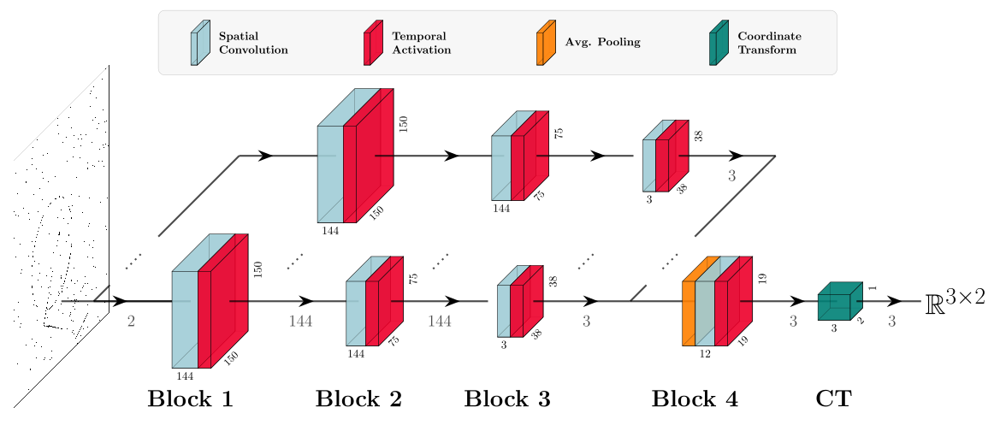

Part I
The energy problem
Motivation for heuromorphic computing
Von Neumann Architecture

Wikipedia
Pain points
- Memory bottleneck
- Power consumption
- Real-time processing
A lot of room to improve

If we can "lower" computation into physics...
We achieve extreme energy gains
Up to 27-35 orders of magnitude
So why aren't we doing that?
Part II
We don't bnow how to build neuromorphic networks
The Challenge
We lack theories to guide efficient implementations
- We can build the circuits...
- ...but we don't know how to combine them
- Current neuromorphic models cannot compete with deep learning
How do we program neuromorphic systems?

Abreu & Pedersen, 2024
The co-design perspective

Frenkel, Bol, & Indiveri, 2022
Letting physics do the compute
Goal: align computation with physical primitives

Read more at neuroir.org
Pedersen et al., 2024
Part III
Spatio-temporal receptive fields
What the frog's eyes tell the frog's brain
- Sharp, dark, moving edges
- Independent of luminosity
Nature uses spatio-temporal receptive fields

Event-based cameras

Alexandre Mariceau, 2023
Our contribution
Principled computational model based on spatio-temporal covariance
- Mathematical guarantees
- Built on neuromorphic primitives (LI, LIF)
- Immediate relevance for event-based vision and signal processing
Spatial receptive fields
Convolution of input signal $f$ with Gaussian kernel $g$
$$ (g * f)(x) = \int_{u \in \mathbb{R}^n} g(u) \, f(x - u) \, du $$
Gaussian kernels are covariant to affine transformations
Spatial receptive field responses

Temporal Receptive Fields
Causality constraint: cannot integrate from $-\infty$ to $\infty$
$$ (h * f) (t) = \int_{u = 0}^\infty h(u)\ f(t - u) du $$
Use exponentially truncated kernel:
$$ h(t;\, \mu) = \begin{cases} \mu^{-1}\exp(-t/\mu) & t \gt 0 \\ 0 & t \leqslant 0 \end{cases} $$
Temporal receptive field responses
Spatio-temporal responses

Exploiting structure and symmetries

| Signal: $x$ | Transformation: $g$ | Operator: $\phi$ |
| $g \cdot \phi = \phi' \cdot g'$ | ||
Exploiting structure and symmetries
| Signal: $x$ | Sun rising: $g$ | Bug detection: $x_\phi$ |
| Signal: $x$ | Movement: $g$ | Shape detection: $x_\phi$ |
Example of spatio-temporal covariance

The importance of covariance: adaptation

Lots of literature on this. Read more at jepedersen.dk
Part IV
Neuromorphic implementation
Key insights
- Leaky integrators are scale covariant
- Leaky integrate-and-fire neurons are approximately scale covariant
- Leveraging covariance means we can precisely formulate computation (and lets us beat ANNs)
Result: High-performing spiking neural networks with covariance guarantees
Covariant spiking neural network components
Spatial
Temporal

Covariant spiking neural networks

Leaky Integrator (LI)
vs. Leaky Integrate-and-Fire (LIF)
vs. Artificial Neural Network (ANN) —
with 8 frames
Part V
Results and Outlook
Experimental Setup
Generated event dataset with moving geometric shapes
- Varying velocity (sparse to dense)
- Sparse: 1‰ activations per timestep
- ~4 shape-related vs ~500 noise activations
Tracking sparse objects
Performance Results
LI and LIF models outperform ReLU networks
- Even vs. multi-frame (8 frames) ReLU
- Strong effect size with RF initialization
- 42.4% performance improvement
Why this matters
- Real-time processing
- Purely neuromorphic - supports NIR
- Provably captures signal transformations
But wait, why not just use gradient optimization?
If we randomly initialize weights, why not just let them learn from data?

Future Outlook
- Deploy on low-power neuromorphic hardware
- Extend to other spatio-temporal tasks (memory, control)
- Bridge theory and practice in neuromorphic computing
- Enable principled design of neuromorphic systems
Summary
- The Problem: Energy constraints + lack of theory
- The Solution: Principled spatio-temporal receptive fields
- The Math: Covariance under geometric transformations
- The Results: Neuromorphic primitives outperform ANNs
- The Impact: Path to practical neuromorphic computing
Acknowledgements
- Co-authors: Jörg Conradt, Tony Lindeberg
- Funding: EC Horizon 2020 (HBP), Swedish Research Council, Danish National Research Foundation
- Published in Nature Communications (2025)
Resources
- Paper: doi.org/10.1038/s41467-025-63493-0
- Code: github.com/jegp/nrf
- Video: YouTube
- Blog: jepedersen.dk
Questions?